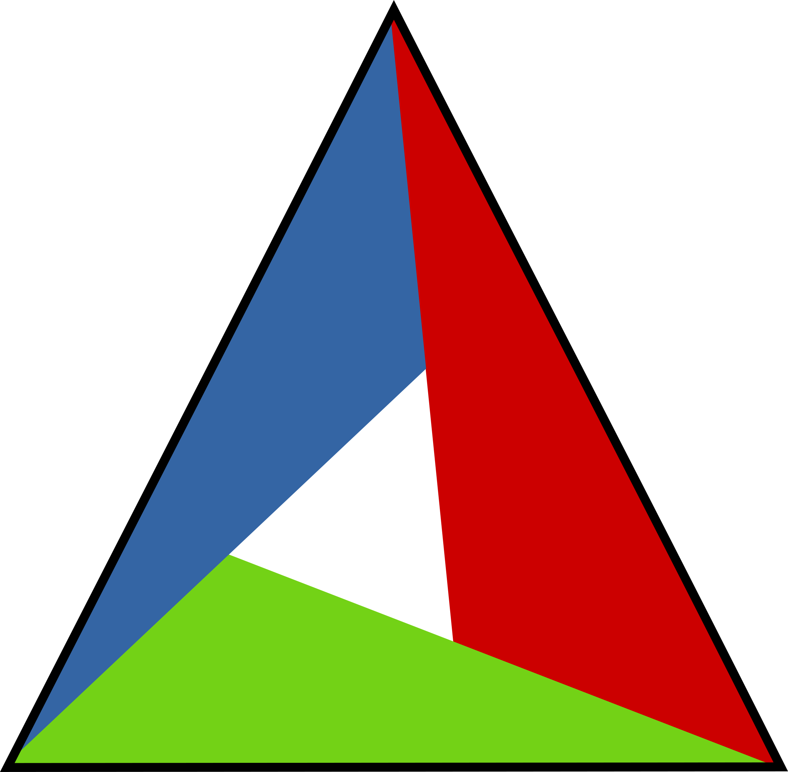
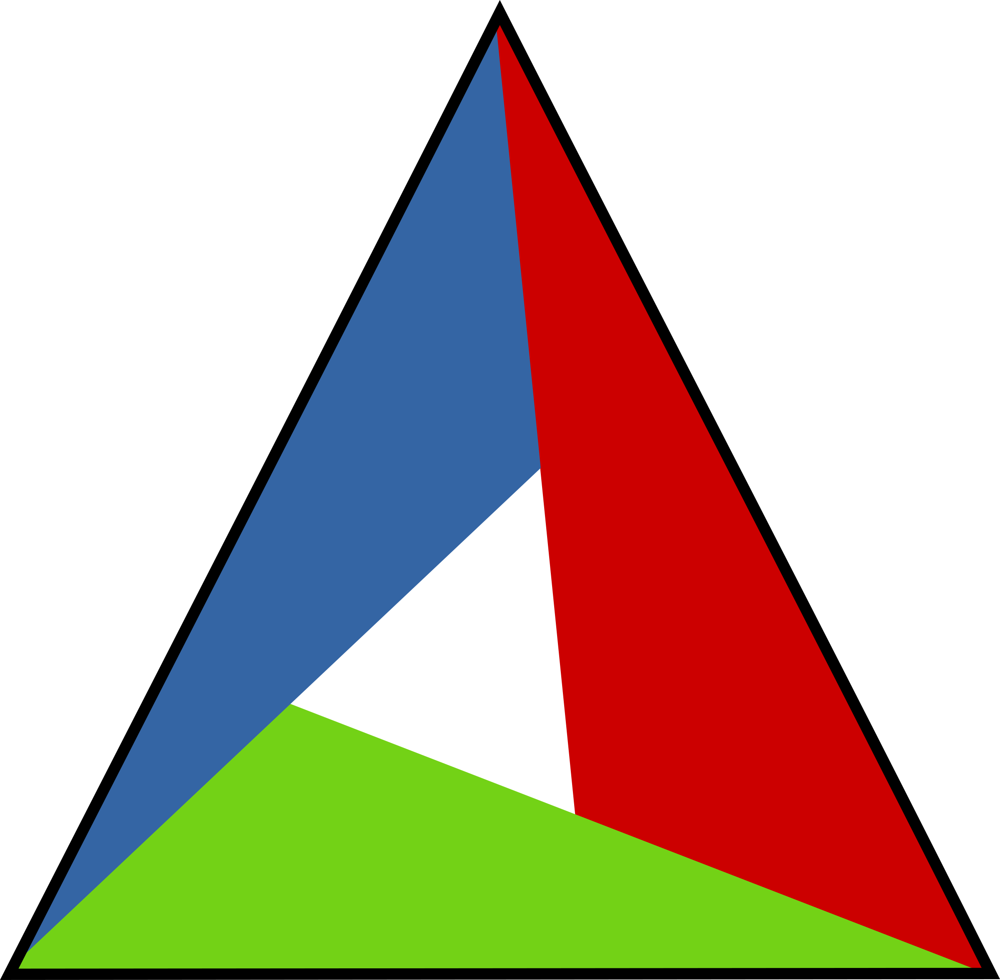

My Areas of Interest
Having worked in Machine Learning, Image Processing and parallel programming I have a good grasp on implementing algorithms on both CPU's and GPU's. Although personally my favourite research area is deep neural networks and computer vision.
Code


Languages I have picked up over the years.
Tools

 

Tools I use for a living.